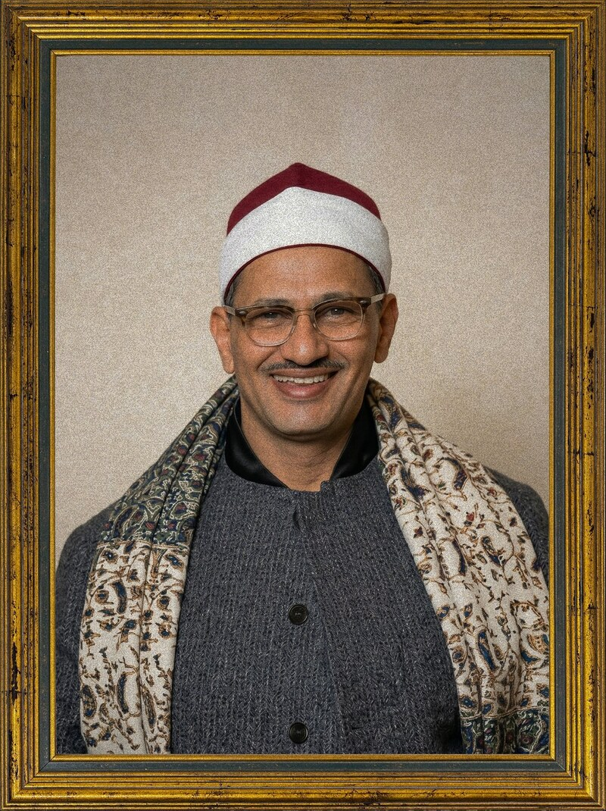

«الشيخ محمد صديق المنشاوي حسنةٌ من حسنات الدهر» "Sheikh Muhammad Siddiq al-Minshawi is a blessing of his age." — الشيخ عبد الحكيم عبد اللطيف — Sheikh Abdul Hakim Abdul Latif
السيرة الذاتية Life & Legacy
A Life Devoted to the Quran حياة وُهبت للقرآن
وُلد محمد بن صديق بن سيد بن ثابت المنشاوي سنة ١٩٢٠م بقرية المنشأة بمحافظة سوهاج في صعيد مصر، في أسرة قرآنية عريقة توارثت تلاوة القرآن جيلاً بعد جيل.
أبوه الشيخ صديق المنشاوي كان قارئاً مجوداً مشهوراً في صعيد مصر، وجدّه ثابت المنشاوي وجدّ والده كلهم قراء للقرآن. تعلّم الشيخ محمد القراءة على يد والده، وأتمّ حفظ القرآن وهو في الثامنة من عمره.
ثم انتقل مع أبيه إلى القاهرة، وفيها بدأ يتعلّم أحكام التجويد على يد كبار الشيوخ، منهم الشيخ محمد النمكي والشيخ محمد أبو العلا.
Muhammad ibn Siddiq ibn Sayyid ibn Thabit al-Minshawi was born in 1920 in the village of al-Minsha'ah in Sohag governorate, Upper Egypt, into a long lineage of Quranic reciters that stretched back generations.
His father, Sheikh Siddiq al-Minshawi, was a celebrated reciter throughout Upper Egypt. Both his grandfather Thabit and his great-grandfather were also reciters. Muhammad learned recitation directly from his father and completed memorizing the entire Quran by age eight.
He later moved with his father to Cairo, where he studied the rules of tajweed under masters like Sheikh Muhammad al-Namki and Sheikh Muhammad Abu al-Ula.
تميّز الشيخ بصوتٍ خاشعٍ ذي مسحة من الحزن العميق، فلُقِّب بـ«الصوت الباكي». لم تكن تلاوته مجرد أداء صوتي، بل كانت رحلة روحية تأخذ المستمع إلى أعماق المعنى.
كان متقناً لمقامات القراءة، عميق الانفعال مع معاني الآيات، حتى صار صوته مرتبطاً عند الناس بالسكينة والخشوع.
The Sheikh was distinguished by a reverent voice with a deep undertone of sorrow, earning him the title "The Weeping Voice." His recitation was not mere vocal performance but a spiritual journey that drew listeners into the depths of meaning.
He was a master of all maqamat (musical modes) of recitation, profoundly engaged with the verses he recited — until his voice became, for many, synonymous with serenity itself.
بدأ رحلته مع التلاوة بتجواله مع أبيه وعمه بين السهرات الدينية، حتى قرأ منفرداً سنة ١٩٥٢م بمحافظة سوهاج، فذاع صيته في الأنحاء.
رفض في البداية الذهاب للإذاعة المصرية بدافع من العزّة والأنفة، حتى أرسل مدير الإذاعة مندوباً إليه سنة ١٩٥٣م، فاعتُمد قارئاً رسمياً للإذاعة، وحمل لقب «مقرئ الجمهورية».
سافر إلى السعودية وسوريا والأردن والكويت والعراق وليبيا والسودان وإندونيسيا وغيرها، وتلا في المسجد الأقصى. حصل على وسام الاستحقاق من سوريا، وأوسمة كثيرة من ملوك ورؤساء الدول الإسلامية.
His journey began as a young man traveling with his father and uncle to religious gatherings. His first solo recitation in 1952 in Sohag governorate brought him sudden fame across the region.
He initially refused to record for Egyptian Radio out of pride and dignity, until the radio director sent an envoy in 1953. He was officially appointed as a reciter and carried the title "Reciter of the Republic."
He traveled to Saudi Arabia, Syria, Jordan, Kuwait, Iraq, Libya, Sudan, Indonesia and beyond, and recited at the Al-Aqsa Mosque. He was awarded Syria's Order of Merit and numerous decorations from kings and presidents across the Islamic world.
أصيب الشيخ سنة ١٩٦٦م بمرض دوالي المريء. ورغم تدهور حالته، ظلّ يقرأ القرآن حتى لحظاته الأخيرة، إلى أن وافته المنية يوم الجمعة ٢٠ يونيو ١٩٦٩م، وعمره ٤٩ عاماً فقط.
ترك الشيخ ميراثاً ضخماً يتجاوز ١٥٠ تسجيلاً صوتياً ما بين مرتل ومجوّد، يُعدّ مصحفه المرتل من أعظم المصاحف في تاريخ دولة التلاوة. وأصبح أسلوبه نموذجاً يُحتذى به لأجيال متعاقبة من القراء.
رحم الله الشيخ، فقد كان — بحقّ — حسنةً من حسنات الدهر.
In 1966 the Sheikh was diagnosed with esophageal varices. Despite his deteriorating health, he continued reciting the Quran until his final moments, passing away on Friday, June 20, 1969, at just 49 years of age.
He left behind a vast legacy of more than 150 recordings, both murattal and mujawwad. His murattal mushaf is considered among the greatest in the history of Quranic recitation. His style became a model emulated by reciters across generations.
May God have mercy upon him — truly, he was a blessing of his age.
المسيرة Timeline
A Journey in Forty-Nine Years رحلة في تسعٍ وأربعين سنة
المكتبة الصوتية Audio Library
١١٤ سورة بصوت الشيخ — برواية حفص عن عاصم 114 Surahs — Hafs from 'Asim Narration